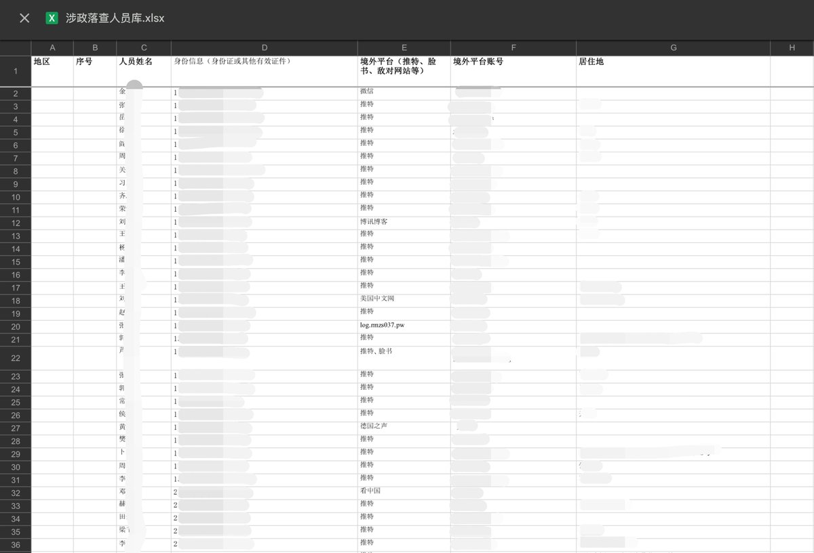
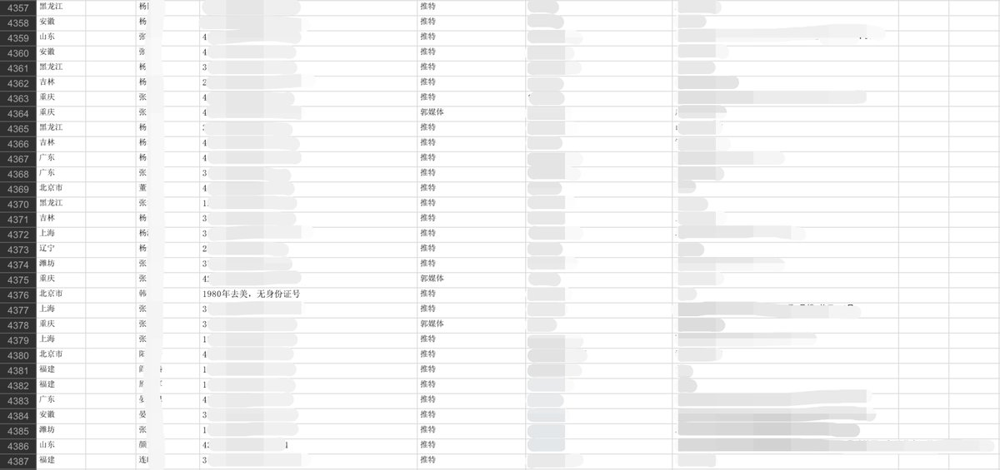
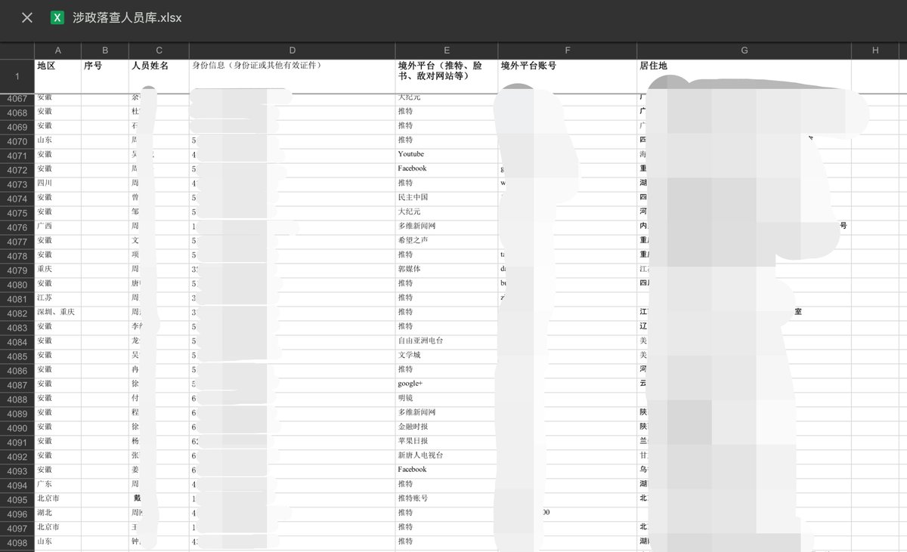
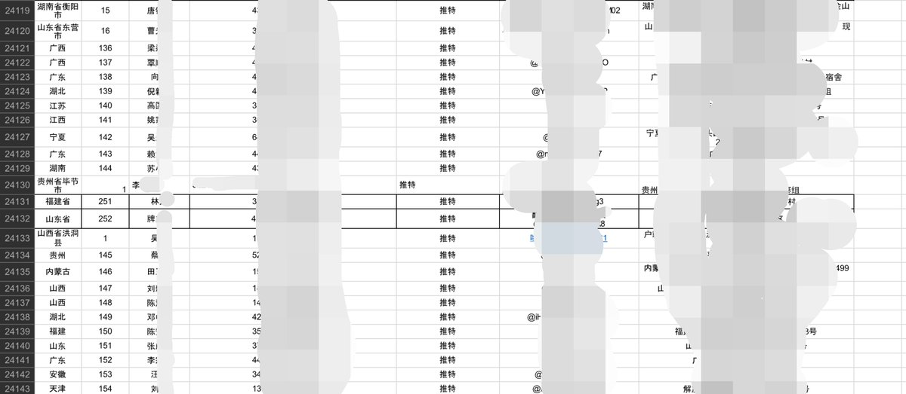

小虚空🍥
@tokerumaisurii
我有点好奇自己在不在上面了，按我以前的经历来说应该可以上（。




昨天
@YesterdayBigcat
网友投稿了一份中共用于监控异议人士的“涉政落查人员库”名单，上面有24000多人的墙外社交媒体（推特、脸书等）账号、身份证号码、居住地址详细信息。我认识的人几乎都在上面，包括我本人，不过很多信息都不够新，应该是2020年之前的。由于涉及到个人隐私，就不公布出来了，主要是提醒一下各位，上网要 https://t.co/J9SJkt6LsG